Conoce el país donde vives un poco mejor
Eso es exactamente lo que hemos preparado para tí por medio de ésta historia de viaje
Necesitas más acción y aventura en tu vida en lugar de la misma rutina? Desde Portland, Maine hacia Portland, Oregon vamos a llevarte en un viaje emocionante atravesando algunas regiones desconocidas de tu país. Deja el carro en casa y viaja en bicicleta desde New England donde todo comenzó. Atravesarás 12 bellos estados, cubriendo un total de 3,600 millas y lograrás 3 misiones monumentales. Celebrando y tomándote una selfie con un rockstar famoso, donando $1 a un billonario para ayudar a erradicar la polio en Africa, y hasta pasar por la casa del famoso autor Stephen King para saludar y pedirle que firme tu libro favorito.
- Distancia (millas) 3,644
- Tiempo de viaje (días) 22
- Punto más alto (pies) 9,613
- Punto más bajo (pies) -3
Maine

Aún escasamente poblado como en 1600, éste es un estado extraordinario y altamente subestimado, abundante en historia y una belleza natural majestuosa. Maine es el estado principal que no te puedes perder. Como tu viaje va a ser largo, es mejor que te prepares para el arduo trecho.
Por suerte, Maine no es solamente el hogar de los primeros colonos europeos en suelo Estadounidense en la era de los vikingos, también es el hogar de la compañía L.L. Bean, en donde puedes conseguir un morral duradero para tu expedición de tres meses.
Precio: $80-$100.
New Hampshire
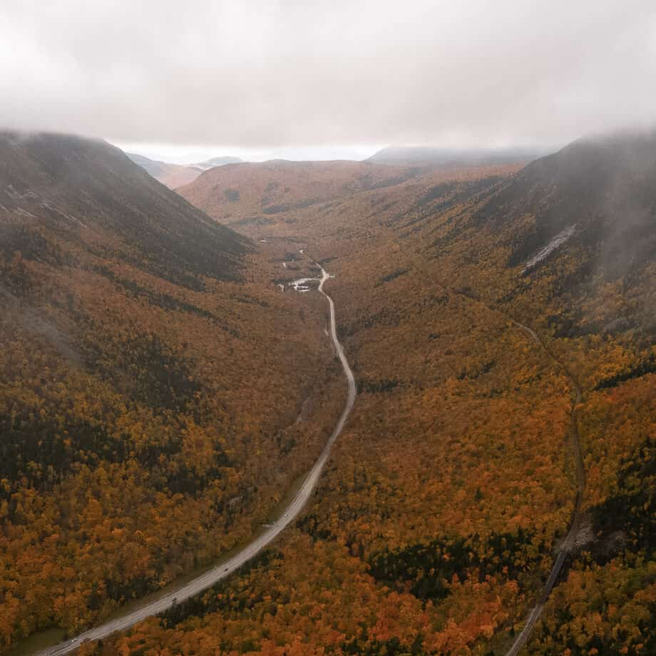
No hay un lugar mejor que New Hampshire para perderte en la naturaleza durante la primavera. Tan sereno y hermoso como lo era en el año 1700, éste estado es aún menos visitado que sus vecinos al sur. Así que aprovéchalo mientras puedas.
Como no estarás usando tu bici todo el tiempo, no te parece una buena idea comprar zapatos extra? Afortunadamente, la mejor compañía del mundo de zapatos para senderismo se encuentra aquí. Pedalea hasta la sede de Timberland en Stratham y llévate un par de botas resistentes e impermeables para mantener tus pies secos. Son ideales para el clima impredecible que encontrarás cuando atravieses los Apalaches. Éstas botas también son mejores que zapatillas de cycling cuando armes tu carpa.
Precio: $100-$150.
New York
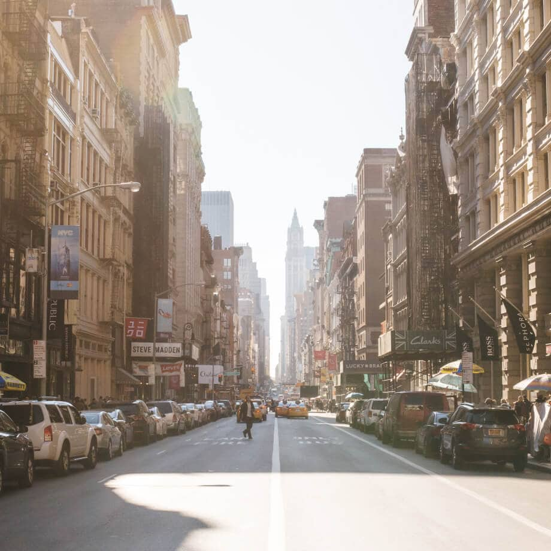
No solamente famoso por "La Gran Manzana", el estado de New York también presenta otras razones para pasar a la historia. Desde finales de 1800, Schenectady, "La Ciudad que ilumina y acarrea el mundo", ha sido el hogar de la famosa compañía General Electric.
Es aquí donde nacieron los generadores modernos, así como los medios contemporáneos para transmisión de energía. Por eso pensamos que éste es el lugar perfecto para comprar una linterna dínamo para tu bici y que te sirva de ayuda en los caminos solitarios y oscuros durante tu aventura. Una linterna de GE te costará aproximadamente $10-$20.
Erie, PA
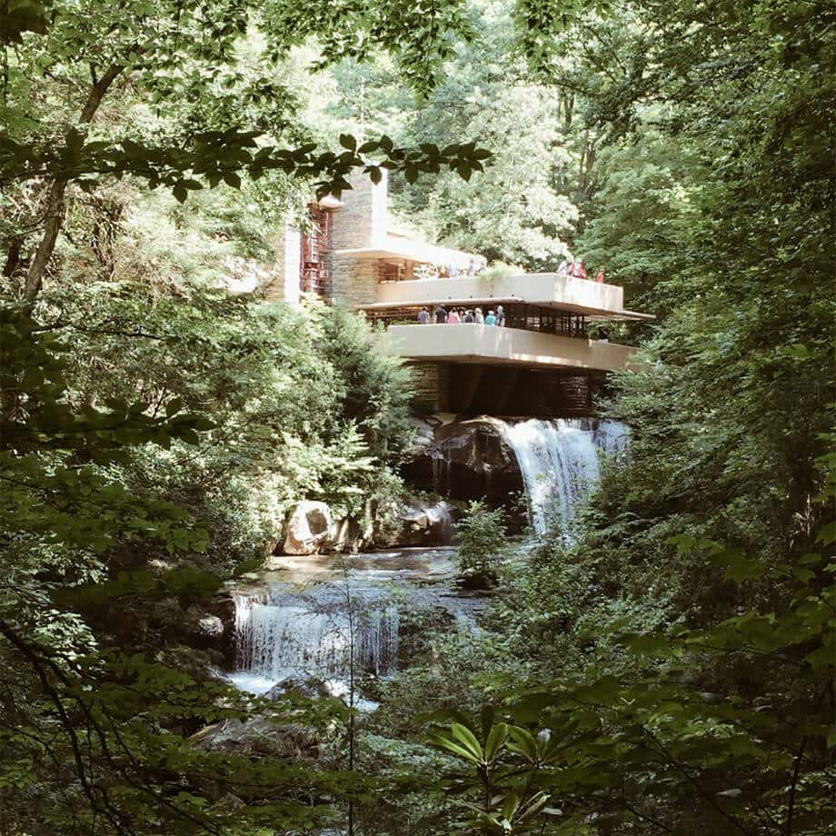
Que Erie, Pennsylvania, no te confunda con la palabra en Inglés “eerie” (escalofriante), aunque pueda serlo de vez en cuando, es otro lugar que vale la pena visitar por diferentes razones. Aunque es mayormente famoso por ser el lugar del Discurso Gettysburg, recitado por Abraham Lincoln durante la Guerra Civil, Pennsylvania también ha producido una comunidad Amish bastante grande.
La razón por la que te hemos traído aquí, si todavía no la has adivinado, se puede resumir en una palabra deliciosa: chocolate. Hershey's es una compañía basada en Pennsylvania. Con certeza, será una de las misiones más sabrosas que tendrás durante este tour, hazte un amigo Amish y disfruta una chocolatina en el Refugio Nacional de Vida Silvestre que se encuentra en la ruta a Eerie. Trata de tener una experiencia extra Eerie!
El precio de una chocolatina Hershey's: 60¢ aprox.
Ohio

Desde la ciudad universitaria de Columbus hasta la pristina línea costera de Cleveland, Ohio es verdaderamente una gema escondida. Los terremotos son sorprendentemente comunes en ésta región particular de Norte América, más de 200 han sido registrados con una magnitud de 2 o mayor desde 1776. Sin embargo, los terremotos no son los únicos que mueven éste estado central. Uno de los parques temáticos más grande y antiguo que te espera para SACUDIR tu mundo se encuentra en Sandusky, Ohio! Ésta será una de las aventuras más excitantes que completarás (si es que tienes nervios de acero). Toma un merecido descanso de la bici y móntate en cuantos juegos puedas antes de continuar tu viaje!
Precio de un ticket por día: cerca de $100.


 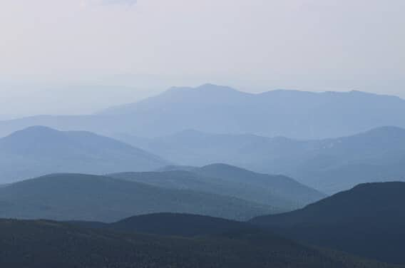
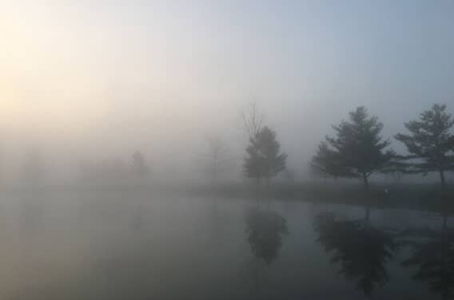
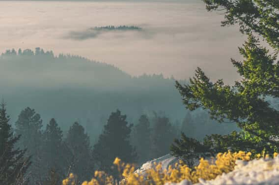
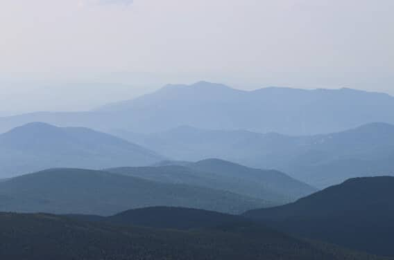
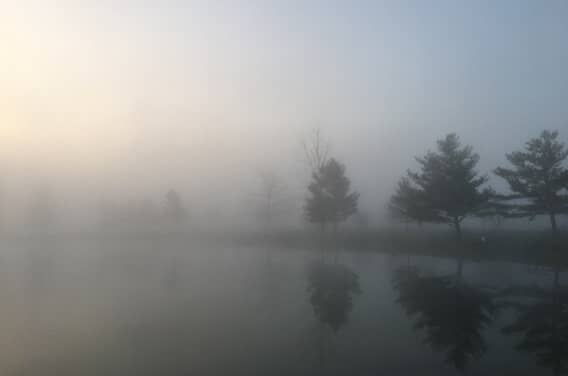
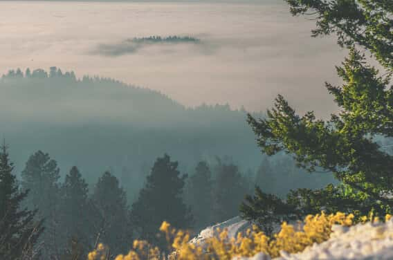
 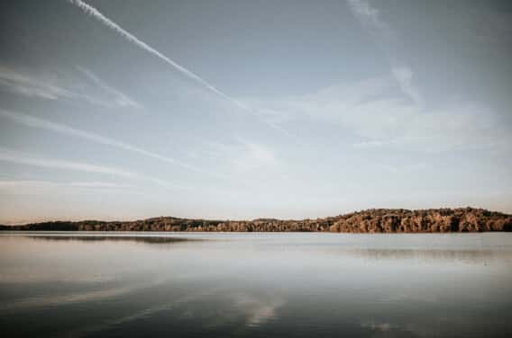
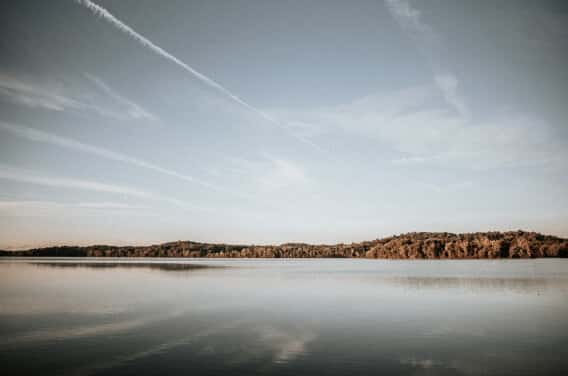
 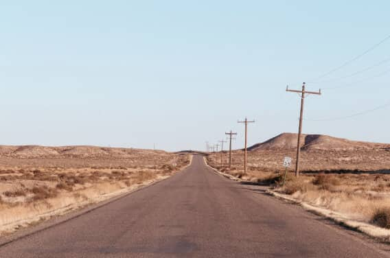
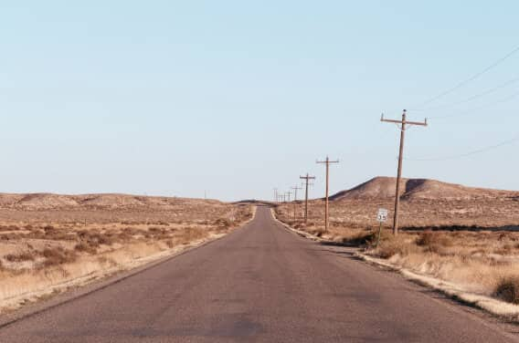